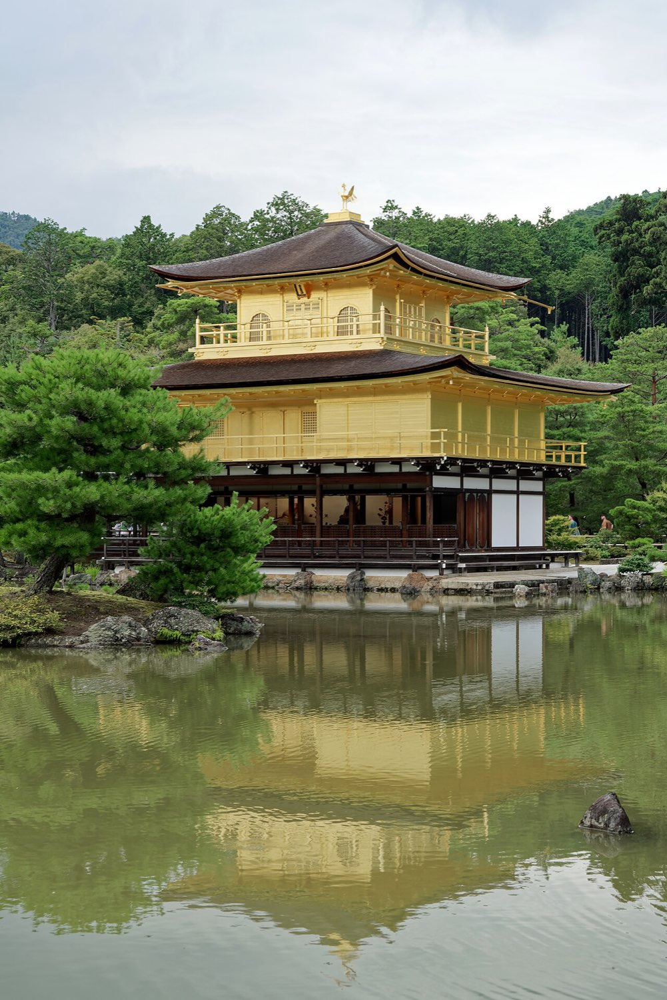
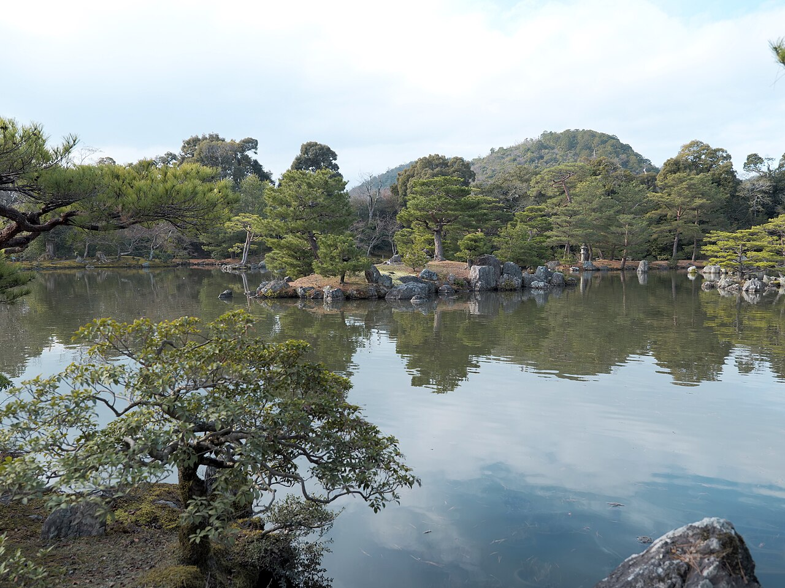
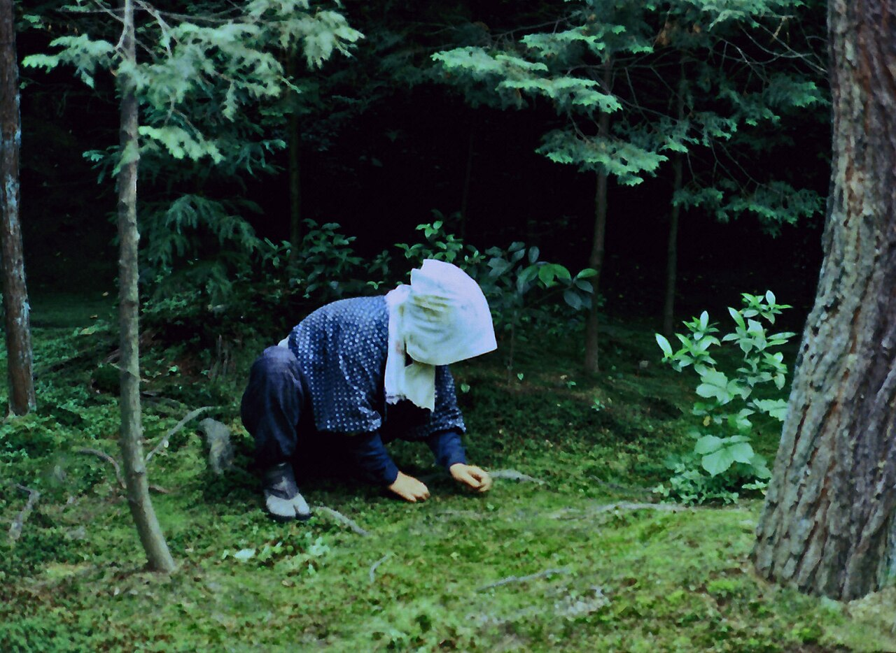

A zen pavilion wrapped in real gold leaf, floating over a mirror pond. It's the single most famous building in Japan and it looks exactly as impossible in person as in the photos.



Two floors of gold leaf topped with a phoenix, rebuilt in 1955 after a monk burned it down, a story worth reading.
Kyoko-chi, positioned so the pavilion reflects perfectly, the photo takes itself.
A one-way stroll through the grounds, past the head priest's quarters and a small tea garden.
The tea house on the way out does matcha with a gold-flecked sweet, on theme.